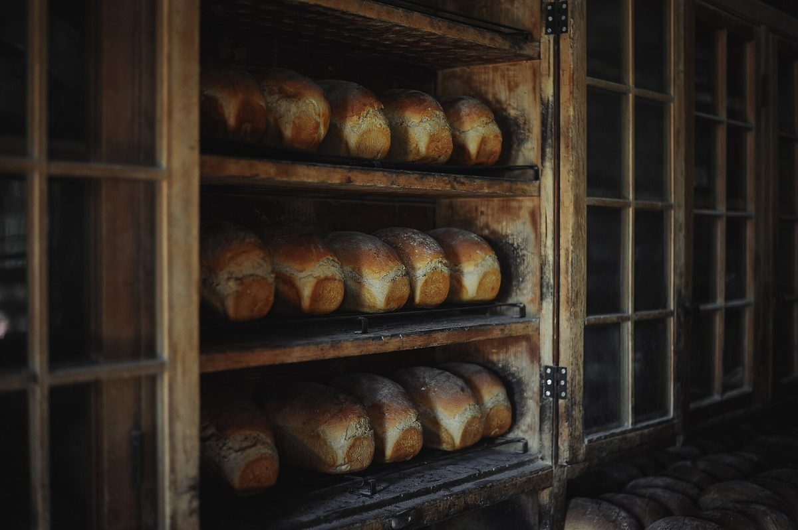
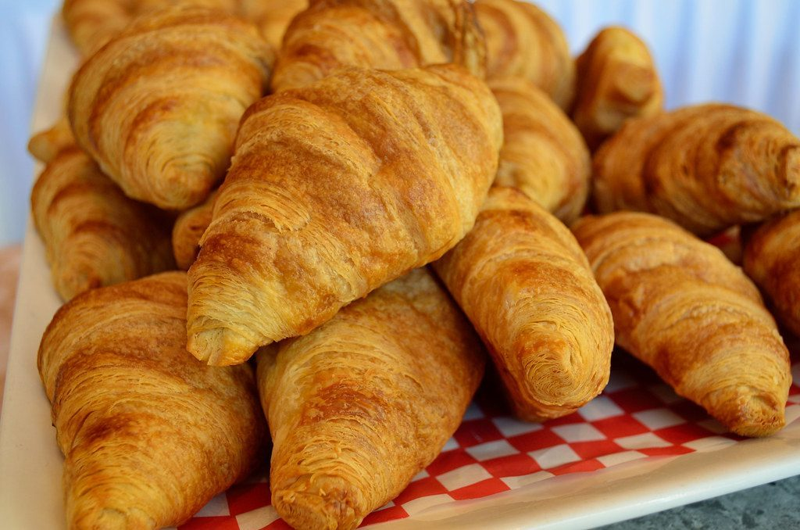

制作側の連想
レトルト殺菌釜の部位を、配置図にしてみる
このサイトは、横長の殺菌釜を図にしたつもりで作りました。六つの部位に番号をふり、上の図と並べています。制作側の連想で、お店の理念・由来とは無関係です。実際の機器の仕様を示すものでもありません。
凡例
六つの部位
- 1釜体袋入りの食品を入れ、熱と圧力をかける横長の円筒形の容器。
- 2扉釜の口を密閉する丸いふた。ハンドルを回して閉める。
- 3トレー台車袋を並べた棚を載せて、釜へ出し入れする台車。
- 4圧力計釜の中の圧力を、針の位置で示す計器。
- 5蒸気配管加熱に使う蒸気を、釜へ送り込む配管。
- 6排水弁釜の底から、水や蒸気を外へ抜くための弁。
ギャラリー(イメージ)
パンの写真



写真はパンのイメージです。お店のものではなく、お店で提供している商品を示すものでもありません。
ご案内
お店のこと(確認できたものだけ)
| 所在地 | 〒379-2204 群馬県伊勢崎市西久保町3丁目747-6 |
|---|---|
| 電話 | 準備中 |
| 営業時間 | 準備中 |
| 定休日 | 準備中 |
| ご予約 | 準備中 |
| 駐車場 | 準備中 |
| SNS | Instagram @sweet_danish918 |